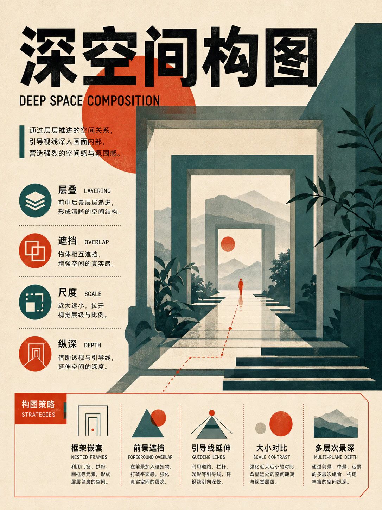

品牌标志与强符号图标
标志要在 0.3 秒内被认出来。三四重门框加前景叶影在名片、App 图标里立刻糊成一团脏色块。
DEEP SPACE COMPOSITION
FOUR DEPTH CUES & ECOLOGICAL OPTICS
纸张和屏幕本来只有宽与高，没有前后纵深。人眼之所以看一眼 086 原海报就觉得走廊往里退了二三十米，是因为四条单眼深度线索（monocular depth cues）在同时投票：前景遮挡先把「谁离我最近」锁死，嵌套框架把空白距离切分成数得清的步阶，阶梯引导线接住视线往灭点拽，远端红人则借日常人体高度给出尺子，让大脑立刻算出廊道的体量。
心理学家詹姆斯·吉布森在 1950 年出版的《视觉世界的知觉》里提出，人类并不靠凭空猜测空间，而是直接从光阵列里的遮挡（occlusion）与表面纹理梯度（texture gradient）读取前后序与距离。遮挡的厉害之处在于它从不模棱两可——只要一片暗叶截断了青门边缘，大脑 100% 认定叶子在前、门框在后。
HISTORICAL LINEAGE OF DEEP SPACE
把平面画深，并不是摄影机发明后的新鲜事。东西方的画师、造园家与导演花了近千年，走出了四条互相印证的造深路径——点下方时代切签，看每一代人怎么布置自己的 Z 轴。
DOLLY ZOOM & PERSPECTIVE COMPRESSION
很多人以为「走廊够长就会有深空间感」，其实机位与焦段能把同一条 18 米长的走廊彻底变脸。下面这台暗室仪做了一个经典光学实验——滑动变焦（Dolly Zoom）：每当你拧长焦段，机位自动后退，让第一道青门在画面里保持分毫不差的宽度；这时仔细盯住后方的三道门、红人和赤日，看空间怎样被生生拉长或压扁。
补充视角关系：走廊最稳妥的机位是平视构图；若想反过来利用近大远小故意制造错觉玩笑，可看强制透视构图；若把机位抬高或压低改变仰俯角，则会进入鸟瞰构图、虫视构图或顶视构图的节奏。
FIVE STRATEGIES & EMPIRICAL RANGES
以下数字为教学与实战总结的经验值，并非死规矩；超出区间时，画面容易滑向开场实验台演示的「堵口」「黑洞」或「失锚」。
WHEN DEEP SPACE WORKS AGAINST YOU
纵深能带来仪式感与沉浸感，但它天生更重、更复杂、需要足够大的画幅去呼吸。遇到下面四种任务时，硬做层层嵌套反而拖累信息传达——此时应当转向同小类的反向方法：平面化构图。
标志要在 0.3 秒内被认出来。三四重门框加前景叶影在名片、App 图标里立刻糊成一团脏色块。
点击上方「缩略图压力测试」立见分晓：当卡片缩到手机双列瀑布流大小时，深处的主体小到根本看不清卖的是什么。
用户想细看瓷器釉面或包装细节时，硬塞前景树叶和长走廊只会显得做作、转移注意力。
带强明暗纵深和斜向汇聚线的背景会把正文切成明暗碎块，行文对比度来回跳变，眼睛很快发酸。
SINGLE-VARIABLE SPATIAL DIAGNOSTIC
ORIGINAL POSTER & INDEX
